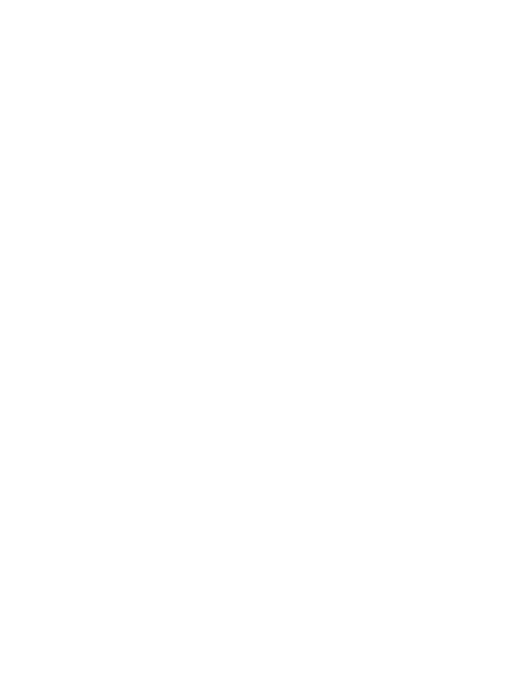
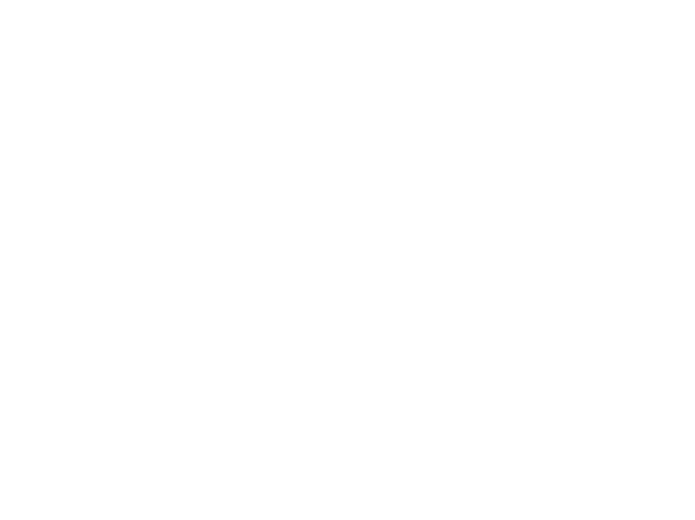
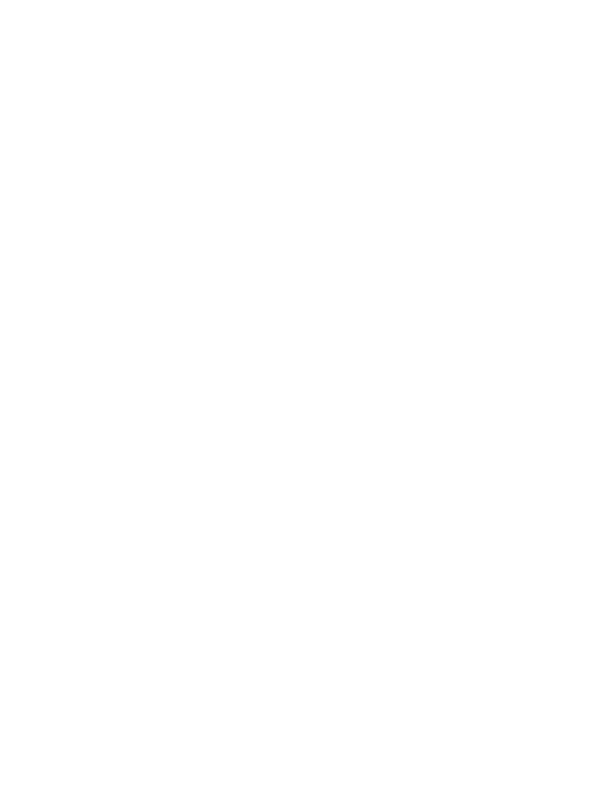

/joel-jacob/about
Joel Jacob
Carnegie Mellon University
BS in Mechanical Engineering, Expected May 2027

Joel Jacob
Carnegie Mellon University
BS in Mechanical Engineering, Expected May 2027

September 2024 - Present
Skills used: Onshape, MATLAB, 3D Printing, Soldering
I created a new robot concept and founded a small team to design and build it under the guidance of CMU Combat Robotics. Using Onshape, we modeled a three-pound undercutter robot. Some notable parts of this design are the custom TPU chassis and the custom AR500 weapon.

September 2025 - Present
Skills used: SolidWorks, Git, Python, Microcontrollers, 3D Printing
I worked as a research assistant for the CMU MetaMobility Lab, where I contributed to the design of the hip exoskeleton. I used my experience to design some custom parts in SolidWorks. I also collaborated on using sensor fusion algorithms and machine learning models to control the robotic hardware.

October 2021 - June 2024
Skills used: Java, Git, Raspberry Pi, Soldering
As the director of the electrical and control department of FRC Team 5123, I networked a complete CAN bus-based wiring and controller system and wrote Java code based on the command and subsystem framework. I also worked on integrating visual odometry and pose estimation with a Raspberry Pi running PhotonVision to achieve autonomous driving. We were able to win the FRC NYC Regional Championship in 2023 and advance to the World Championship.

October 2025 - Present
Skills used: HTML, CSS, JavaScript
My number one goal for this website was to prioritize functionality and content delivery, as seen through implementing a brutalist design with simple HTML, CSS, and JavaScript.
© 2025 Joel Jacob. All rights reserved.